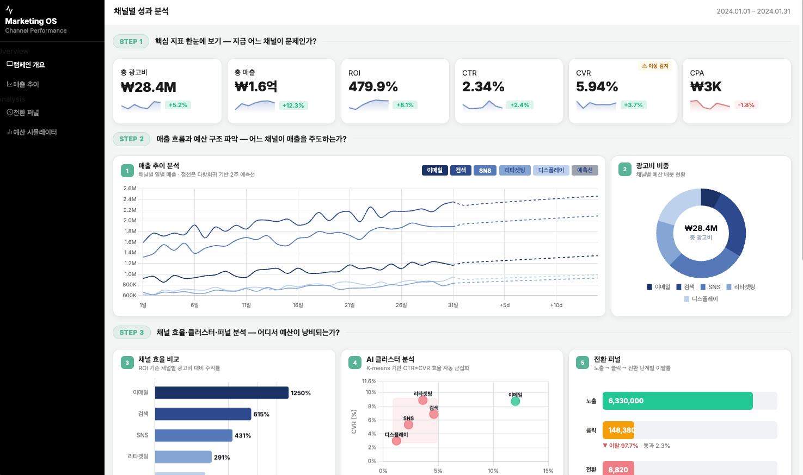
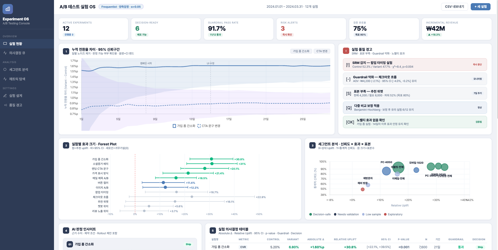
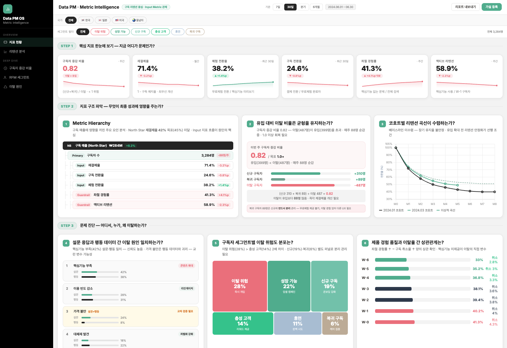
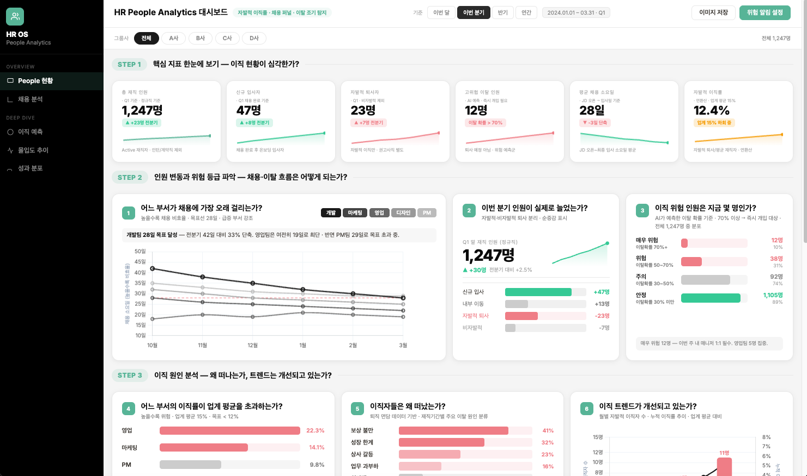
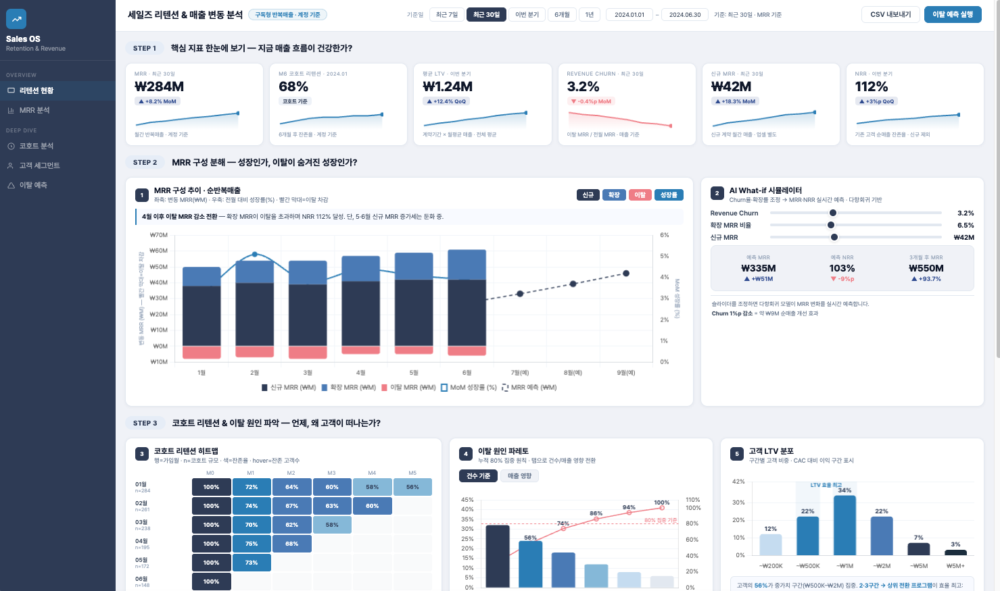
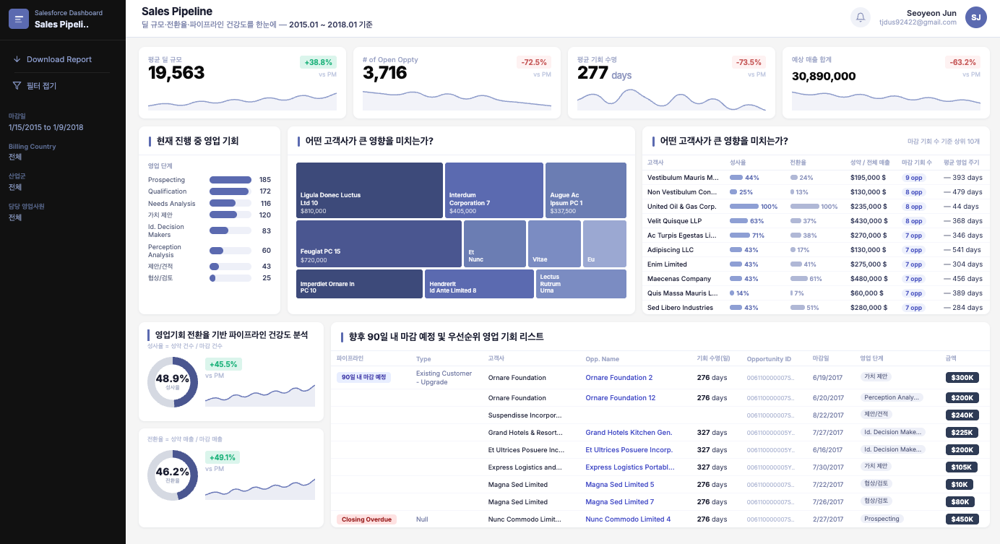

AI+데이터 시각화
w. Claude Code
데이터 시각화 전문가 전서연에게 배우는
AI 인터랙티브 데이터 시각화
DataBridge CEO
전서연
2
DataBridge
전서연
국내 최초 Tableau Visionary 2026
전세계 41명 선정 · 글로벌 데이터 시각화 전문가
국내 최초 5년 연속 Tableau Ambassador
databridge.co.kr
현재
DataBridge
CEO / Founder
데이터 스토리텔링 기반 AX / DX 교육 및 컨설팅
현대자동차 전사 BI 부트캠프
쿠팡 Business Analytics 대시보드 구축
하나은행 전사 디지털 데이터 분석 스쿨
CJ그룹 전사 태블로 교육
대상그룹 · 한국철강 · 사조그룹 전사 교육/시스템 구축
FastCampus
패스트캠퍼스 온라인 강의
2021
세계 3등에게 배우는 실무 밀착 데이터 시각화
2024
세계 3등에게 배우는 13개 데이터 분석 프로젝트
2026
AI + 데이터 시각화 (w. Claude Code)
이전
AWS
Business Analyst
Martinee
Growth Data Analyst
강의 개요 & 결과물 미리보기
03
수강 대상
분석가 ·
마케터 · PM
코드 없이 분석·시각화·자동화 직접 구현
데이터 분석가 · 마케터 · 기획자 · PM
데이터 분석가
반복 집계·시각화 자동화
카테고리별 매출 증감율, 드릴다운 분석 — 요청 한 번에 자동 집계·시각화
완성 결과물 → 매출 드릴다운 분석 대시보드
마케터 / 기획자
데이터 기반 마케팅 리포트 제작
광고 소재별 CTR · 앱설치 · 구매전환율 퍼널, 프로모션 전후 매출 자동 비교
완성 결과물 → 마케팅 채널 성과 · A/B 테스트 대시보드
PM
KPI 대시보드 구축 · 보고서 자동화
RFM 세그먼트 대시보드, A/B 유의성 자동 검정, Slack 주간 리포트 자동 발송
완성 결과물 → PM 메트릭 · Retention · Sales Pipeline 대시보드
강의 개요 & 결과물 미리보기
04
전체 커리큘럼
6 Parts
기초 관점부터 실전 대시보드, 자동화 파이프라인, 포트폴리오 배포까지.
P01
왜 AI 데이터 시각화인가
기초 관점 · 환경 세팅 · 6클립
P02
Claude Code 기초 빠르게 익히기
설치 · 첫 실행 · 자동화 구조 이해 · 12클립
P03
시각화 전략 자동 설계
KPI 설계 · 대시보드 자동화 · 리포트 발송 · 10클립
P04
고급 인터랙티브 시각화
인터랙티브 차트 · 고급 시각화 실습 · 4클립
P05
직무별 실전 대시보드
마케팅 · A/B · PM · 리텐션 · HR · 15클립
P06
웹 기반 포트폴리오
Stitch · Antigravity · 배포 · 3클립
Clip 02
왜 AI + 데이터
시각화인가
수작업 워크플로우의 한계 · Claude Code 접근 방식
ChatGPT와 구조적 차이
왜 AI + 데이터 시각화인가
06
수작업 데이터 분석 워크플로우
수작업 분석
5단계
월말 마케팅 리포트 시나리오. SNS·검색·디스플레이 5개 채널 CSV → 채널별 CTR·CVR 집계 → 차트 → 보고서. 숫자 하나 틀리면 처음부터.
매번 반복 · 오류 발생 시 전 단계 롤백
숫자 하나 바뀌면 4단계 전체 재작업
STEP 01
CSV
다운로드
STEP 02
Excel
집계
STEP 03
차트
제작
STEP 04
리포트
정리
⚠
데이터 수정
→ 처음부터
재작업
숫자 하나 바뀌면 1단계부터 반복
왜 AI + 데이터 시각화인가
07
Claude Code 워크플로우
Prompt to
Dashboard
# Antigravity 채팅 패널
"data/raw/에 있는 5개 채널 CSV를 합쳐서
채널별 ROI, CTR, CVR을 계산하고
인터랙티브 대시보드로 만들어줘."
파일 업로드 불필요
오류 발생 시 자동 수정
결과 파일 자동 저장
CLAUDE.md
— 프로젝트 폴더에 두는 규칙 파일.
Claude Code 매번 참조 — 일관된 작업 방식 유지
PIPELINE
STEP 01
자연어 입력
채팅 패널 요청
STEP 02
파일 읽기
CSV 직접 접근
STEP 03
코드 작성 & 실행
오류 시 자동 수정
STEP 04
결과 저장
dashboard.html
수작업
CSV 다운로드 → Excel 집계 → 차트 제작 → 리포트 → ⚠ 재작업
Claude Code
자연어 요청 한 번 → 파일 읽기 → 코드 실행 → 대시보드 완성
자동화
왜 AI + 데이터 시각화인가
08
구조적 차이
ChatGPT
vs
Claude Code
CHATGPT
대화 도구
CLAUDE CODE
실행 에이전트
제안 → 사용자 실행
vs
요청 → 직접 실행·저장·자동화
ChatGPT
Claude Code
파일 접근
수동 업로드
로컬 파일시스템 직접 R/W
코드 실행
코드 제안 → 사용자가 실행
내 컴퓨터에서 직접 실행
결과 저장
복붙 수작업
파일 자동 저장·관리
규칙 기억
세션 종료 시 초기화
CLAUDE.md 영구 적용
반복 작업
단계마다 개별 요청
파이프라인 자동 실행
환경 연동
웹 브라우저만
Git · Slack · DB · API
▲ 강조
Clip 03
좋은 데이터
시각화의 원칙
질문 정의 · 인사이트 제목 · 강조 하나
Data-Ink Ratio · 다양한 관점 · 평균의 함정
좋은 데이터 시각화의 원칙
10
데이터 시각화의 목적
Actionable
Insights의
커뮤니케이션
수치 나열이 아닌, 보는 사람이 다음 액션을 바로 알 수 있도록 시각화를 설계하는 원칙
STEP 1
현황 관찰
전년 대비 매출 30% 하락
STEP 2 · 왜?
드릴다운
신규 유저 이탈 — 이벤트 종료 직후
STEP 3 · 왜?
원인 파악
체리피커 유입 — 전환율 급락 패턴
ACTION
전략 수정
이벤트 대상 세그먼트 조정 + 재구매 쿠폰 설계
대시보드 설계 전 반드시 정의할 5가지
W
Who — 누가 보는가
관리자용(매출·수익 KPI) vs 실무자용(채널별·상품별 드릴다운)
W
Why — 왜 봐야 하는가
어떤 비즈니스 문제를 해결? 예상 효과와 비용은?
W
What — 어떤 지표가 필요한가
상대적 · 비율 · 액션 가능한 선행지표 (구독 배너 전환율 등)
H
How — 어떻게 비교할 것인가
전기 대비 · 전체 평균 대비 · 유사 카테고리 대비
W
When — 언제 필요한가
실시간 모니터링(Hourly) · 운영 점검(Daily) · 성과 리뷰(Monthly)
좋은 데이터 시각화의 원칙
11
A
B
C
01
질문 먼저
질문
먼저
차트를 만들기 전에 "이 차트가 답할 질문이 무엇인가"를 먼저 정의하는 방법
질문 정의
"무엇을 보여줄까?"
차트 선택
라인 / 막대 / 도넛
# CLAUDE.md에 추가
차트 만들기 전에 항상:
"이 차트가 답할 질문은?"
차트 선택 주의사항
✕
막대·컬럼: 축은 반드시 0부터 시작
✕
파이 차트 — 도넛으로 대체 (길이 속성 활용)
✕
3D 효과 · 스파게티 라인 (5개 이상)
→
라인: 경향 파악이면 0부터 불필요
→
산점도: X=선행지표, Y=후행지표
"월별 매출이 늘고 있는가?"
→ 라인 차트
"채널별 전환율을 비교하려면?"
→ 막대 차트
"고객 구성 비율이 궁금하다"
→ 도넛 차트
"광고비와 전환율에 관계가 있나?"
→ 스캐터 플롯
좋은 데이터 시각화의 원칙
11b
A
B
C
차트 유형 참고 가이드
Chart Type
Reference
질문 유형에 따라 적합한 차트 유형을 선택하는 기준
주의사항
✕
막대·컬럼: 축은 반드시 0부터 시작
✕
파이 차트 — 도넛으로 대체
✕
3D 효과 · 스파게티 라인 (5개 이상)
→
라인: 경향 파악이면 0부터 불필요
→
산점도: X=선행지표, Y=후행지표
라인 차트
시계열 트렌드
"전년 대비 카테고리별 매출 증감율 추이"
막대 차트 (세로)
범주별 비교
"광고 소재별 클릭 전환율 — SNS · 검색 · 디스플레이"
도넛 차트
구성 비율
"신규 · 재구매 · 이탈 VIP 고객 비율"
스캐터 플롯
두 변수 상관관계
"광고비 vs 구매 전환율 — 선행지표 탐색"
좋은 데이터 시각화의 원칙
12
A
B
C
02
인사이트 제목
결론형
제목
결론 + 수치 + 권고를 차트 제목에 담아 제목만으로 인사이트가 전달되게 쓰는 방법
결론 → 수치 → 권고
결론형 제목 공식
1.
결과 수치 명시
2.
비교 기준 포함
3.
권고/시사점으로 마무리
BAD
GOOD
"채널별 ROI"
수치 없음 — 판단 불가
"SNS CTR, 검색 대비 2.8배
— 예산 30% SNS 즉시 재배분"
결론 + 수치 + 권고 완성
"월별 매출"
방향 없음 — 오르는지 내리는지 불명
"3월 매출 +22% — 프로모션 효과
4월 동일 집행 권고"
트렌드 + 원인 + 다음 액션
좋은 데이터 시각화의 원칙
12b
A
B
C
03
단일 강조
강조는
하나만
색상·크기·위치 등 Preattentive attribute를 차트 안에서 최대 1개로 제한해야 하는 이유
PREATTENTIVE ATTRIBUTES
색상
가장 강력 / 1개만
크기
2순위 / 과하면 역효과
위치
레이아웃으로 강조
BAD — 전부 강조 = 강조 없음
SNS
검색
디스플레이
유튜브
카카오
시선이 5곳으로 분산 — 무엇을 봐야 할지 불명
GOOD — 색상 1개만 강조
SNS
검색
디스플레이
유튜브
카카오
CTR 2.8×
0.3초 안에 "검색이 압도적" 인식
좋은 데이터 시각화의 원칙
13
A
B
C
04
불필요한 요소 제거
데이터를 설명하지 않는 시각 요소를 모두 제거해 Data-Ink Ratio를 높이는 원칙
복잡한 차트
3D EFFECTS ON
→
Data-Ink 최적화
▲
✕
3D 효과 · 불필요한 격자선 · 과도한 범례
✕
의미 없는 색상 변화 · 장식적 요소
05
수치 + 맥락
목표치·전기 대비·업계 평균 같은 비교 기준을 수치와 함께 표시해야 하는 이유
F&B 브랜드 일일 판매량
560
개
▲ 전주 대비 +12%
14일 평균 455개
주말 +23% vs 주중
수치만
560
판매량
수치 + 맥락
560개
▲+12% 전주 대비
주말 +23% vs 주중
좋은 데이터 시각화의 원칙
14
A
B
C
06
계층별 드릴다운
전체 → 그룹 → 항목 순서로 내려가며 이상 원인을 추적하는 계층별 드릴다운 구조
MACRO — 전체 트렌드
Avg 455
↑최고
14일간 총 6,380개 · 전주 대비 +12%
MEDIUM — 그룹 분리
주중 평균 434개
주말 평균 475개
주말이 주중보다 9.4% 높음 — 주말 마케팅 집중 근거
MICRO — 항목별
기본
새우
치킨
치즈
불고기
기본 버거가 전체의 40% → 기본 메뉴 할인 효과 검토
07
평균 vs 분포
같은 평균이라도 분포 형태가 다를 수 있으므로 평균과 함께 분포를 반드시 확인해야 하는 이유
A 그룹 평균 만족도
4.01
1점
5점
대부분이 3~4점에 몰린 분포
B 그룹 평균 만족도
3.65
1점
5점
5점 多
★ 평균은 낮지만 5점 비율이 훨씬 높다
결론 — 평균만 보면 A > B 오판
분포 포함 시 B 우위 / 평균 단독 표시 금지
좋은 데이터 시각화의 원칙
15
A
B
C
지표 계층 설계
3-Tier
지표 체계
결과 지표에서 Driver · Input 계층까지 내려가야 개선 포인트를 특정할 수 있는 이유
광고 대시보드 적용 예
OUTPUT
매출 · 구매전환율
DRIVER
배너 CTR · 앱설치 전환율
ACTIONABLE INPUT ← 여기를 건드린다
소재별 클릭전환율 · 캠페인 CTR
METRIC HIERARCHY
LEVEL 1 — Outcome Metrics
결과 지표 (후행)
매출 · CLV · 전환율
LEVEL 2 — Driver Metrics
선행 지표 A
배너 CTR
결제 페이지 전환율
선행 지표 B
앱설치 전환율
회원가입 전환율
LEVEL 3 — Actionable Input Metrics ← 여기서 액션
가장 액션하기 쉬운 지표
소재별 클릭전환율
광고 소재 디자인 변경 → 즉시 개선
가장 액션하기 쉬운 지표
캠페인별 노출수 · CTR
예산 배분 최적화 → 즉시 개선
구독 배너
클릭전환율
Input Metrics일수록 개선 방법이 명확하다
CTR 낮으면 → 소재 바꾸기 · 앱설치 전환율 낮으면 → 랜딩페이지 개선
High-level에만 집중 → 원인 파악 불가 → 액션 불가
Input까지 드릴다운 → 구체적 원인 → 즉시 액션 가능
좋은 데이터 시각화의 원칙
16
A
B
C
대시보드 구조 설계
Metric
Hierarchy
KPI를 결과 → 선행 → 입력 3계층으로 설계해 이상 원인을 빠르게 특정하는 구조
✓
KPI 트렌드가 내려갔으면 → 아래로 파고들기
✓
원인 메트릭 확인 → Action Items 이동
✓
더 깊이 보고 싶으면 → Row Data 직접 탐색
STEP
01
Quick Visibility — KPI 현황 파악
전체 매출 · 증감율 · 트렌드 라인 — 첫 화면에서 지표가 좋은지 나쁜지 파악
KPI 카드 + 라인차트 + 전기 대비 증감율
STEP
02
Drill-down — 원인 후보 탐색
Depth 1: 카테고리·브랜드별 → Depth 2: 상품·고객군별 세분화
세그먼트 비교 막대 · 비율 도넛 · 그룹별 트렌드 라인
STEP
03
Action Items — 다음 액션 정의
집중해야 할 영업기회 · CRM 액션 필요 고객 리스트 · 우선순위
다음 90일 영업기회 테이블 · 이탈 위험 고객 세그먼트
STEP
04
Row Data — 직접 탐색
원본 데이터 테이블 · 필터 · CSV 내보내기 — 더 깊이 보고 싶을 때
스크롤 가능 테이블 + 컬럼 정렬 + 검색 + 다운로드
좋은 데이터 시각화의 원칙
16b
A
B
C
08
KPI 먼저
지표
설계
시각화 전에 지표의 이름·계산식·단위를 먼저 정의해 모호함을 없애는 방법
KPI 정의 3요소
1
이름 — "세금 제외 순매출"
2
계산식 — Revenue - Tax
3
단위 — 월 합계, 전월 대비 증감율
BAD — 모호한 지표
"매출"
세전? 세후? 월? 연? 기준 없음 — 사람마다 다른 숫자
GOOD — 명확한 KPI
"세금 제외 순매출
(월 합계, 전월 대비 증감율)"
모든 사람이 동일한 숫자를 본다
BAD — 모호한 지표
"클릭률"
클릭수/노출수? 클릭수/방문자수? 정의 없음
GOOD — 명확한 KPI
"배너 CTR
(클릭수 ÷ 노출수 × 100, %)"
계산 방법과 단위가 명확
좋은 데이터 시각화의 원칙
16c
A
B
C
09
지표 유형
선행
지표
결과 지표만이 아닌 선행 지표를 함께 포함해 사전 대응을 가능하게 하는 이유
선행지표 포함 기준
✓
결과보다 먼저 움직이는가
✓
이 수치가 바뀌면 액션이 가능한가
✓
드릴다운이 되는 구조인가
LAGGING — 후행지표
매출
이익률
구매 전환율
고객 수
이미 일어난 결과 / 원인 추적 불가 / 사후 대응만 가능
LEADING — 선행지표
배너 CTR
장바구니 추가율
앱설치 전환율
이탈률
결과보다 먼저 움직임 / 원인 파악 가능 / 사전 대응 가능
선행지표 필수 포함 — 최소 1개 이상
CTR 하락 → 다음 주 매출 하락 예측 가능 → 지금 소재 교체
좋은 데이터 시각화의 원칙
16d
A
B
C
10
수치 표현
비교 기준
명시
전기 대비·목표 대비 비교 기준을 함께 표시하되 절대값과 상대값을 카드 단위로 분리하는 원칙
항상 병기할 비교 기준
→
전기 대비 증감율 (±%)
→
목표 대비 달성율 (%)
→
N일 평균 또는 업계 평균
✕
절대값·상대값·누적값 동시 혼용
BAD — 절대값만
일일 판매량
560
→
GOOD — 맥락 포함
일일 판매량
560
개
▲ 전주 +12%
14일 평균 455개
BAD — 혼용
매출 560만원
누적 매출 1,200만원
전주 대비 +12%
세 가지 기준이 섞여 혼란
→
GOOD — 기준 분리
이번 주 순매출 (절대값)
560만원 — 전주 대비 +12%
한 카드에 기준 하나만
절대값 · 상대값 · 누적값은
절대 같은 카드에 혼용하지 않는다
기준 1개 = 카드 1개
좋은 데이터 시각화의 원칙
16e
A
B
C
11
분석 흐름
전체에서
세부로
전체 KPI 현황에서 시작해 세부 원인으로 좁혀가는 분석 흐름의 원칙
흐름 원칙
✕
세부 데이터부터 보여주기
✕
맥락 없이 원인 차트 먼저
→
전체 현황 카드 → 세분화 → 원인 → 액션
01
GENERAL
전체 KPI 현황 — 지금 잘되고 있나?
↓
02
BREAKDOWN
세그먼트 분해 — 어떤 그룹이 다른가?
↓
03
ROOT CAUSE
원인 탐색 — 왜 그 그룹이 다른가?
↓
04
ACTION
즉각 액션 — 무엇을 바꿀 것인가?
좋은 데이터 시각화의 원칙
16f
A
B
C
12
대시보드 유저
유저에
맞는 뷰
임원과 실무자가 원하는 정보 깊이 차이를 탭 분리로 해소하는 방법
독자 정의 체크리스트
1.
누가 이 대시보드를 보는가
2.
어떤 결정을 내려야 하는가
3.
얼마나 깊이 파고들 시간이 있는가
EXECUTIVE — 임원
핵심 KPI 3~5개만
증감 상태 색으로 즉시 판독
즉각 액션 3개 도출
30초 안에 읽힘
ANALYST — 실무자
세부 원인 차트 포함
드릴다운 필터 제공
데이터 테이블 탭 포함
CSV 다운로드 가능
혼합 독자 → 탭으로 분리
Overview 탭(임원용) + Detail 탭(실무자용) — 같은 데이터, 다른 깊이
좋은 데이터 시각화의 원칙
16g
A
B
C
13
인사이트 완성
인사이트
완성
발견·근거·임팩트·액션 네 요소를 갖춰야 완성된 인사이트가 되는 기준
인사이트 완성 공식
1.
발견 — 무엇이 보이는가
2.
근거 — 어떤 수치가 뒷받침하는가
3.
임팩트 — 왜 중요한가
4.
액션 — 무엇을 해야 하는가
BAD — 결론 없는 인사이트
"SNS 광고 CTR이 검색보다 높습니다"
그래서 뭘 해야 하는가? 모름
GOOD — 액션으로 이어지는 인사이트
"SNS CTR 2.8% — 검색(1.0%) 대비 2.8배
→ 예산 30% SNS로 이번 주 즉시 재배분"
발견 + 수치 + 다음 액션 완성
BAD — 추측 인사이트
"아마 계절 요인으로 보입니다"
추측 ≠ 인사이트 / 근거 없음
GOOD — 근거 기반 인사이트
"3월 매출 +22% — 이전 2개년 동기 평균
+8% 대비 유의미한 이벤트 효과"
비교 기준과 수치로 뒷받침
좋은 데이터 시각화의 원칙
16h
A
B
C
14
기여도 분해
핵심
20% 먼저
기여도를 분해해서 핵심 변수를 파악하고 분석 방향을 잡는 방법
파레토 분석 적용
→
매출 기여 상위 N개 상품 먼저
→
비용 원인 상위 N개 항목 집중
→
이탈 원인 상위 N개 채널 파악
✕
모든 항목 동등하게 나열
채널별 매출 기여 — 파레토 분석
80%
검색
SNS
유튜브
디스플레이
카카오
기타
42%
26%
14%
0%
80%
100%
검색 + SNS 2개 채널 = 매출의 68%
이 2개에 집중하는 것이 4개를 균등 관리하는 것보다 효과적
TOP 2 먼저
AI 데이터 시각화 사례
AI 시각화
포트폴리오
비즈니스 대시보드 6개 · 인터랙티브 시각화 3개
비즈니스 대시보드 사례 · 1 / 6
18
Marketing Campaign
마케팅 채널
성과 분석
채널 ROI · K-means · 예산 시뮬레이션
채널별 광고 성과 · 매출 추세 · 예산 시뮬레이션
K-means 클러스터링으로 성과 패턴 기준 채널을 자동 분류
Chart.js
K-means
시뮬레이터
이 강의에서 직접 제작 — P05 · CH01
01
Claude Code로 채널별 CSV 집계 · ROI 계산
02
K-means 클러스터링 자동 분류
03
Chart.js 인터랙티브 대시보드 렌더링
1 / 6

비즈니스 대시보드 사례 · 2 / 6
19
Experiment OS
A/B 테스트
실험 대시보드
신뢰 구간 · Forest Plot · AI 인사이트
누적 전환율 추세 · 96% 신뢰구간 시각화
AI 판정 인사이트 · 실험 지표 이력 한 화면
A/B Test
Forest Plot
AI 판정
이 강의에서 직접 제작 — P05 · CH02
01
실험 데이터 집계 · 신뢰구간 계산 자동화
02
Forest Plot · 누적 전환율 추세 시각화
03
Claude Code AI 판정 인사이트 생성
2 / 6

비즈니스 대시보드 사례 · 3 / 6
20
PM Product Metrics
PM 메트릭
대시보드
메트릭 하이라키 · 이탈 위험 · 액션 플랜
메트릭 하이라키 · 획득/이탈 비율 · 세그먼트별 이탈 위험
AI 액션 플랜 · 목표 트래킹 한 화면에
Metric Hierarchy
Churn Risk
Action Plan
이 강의에서 직접 제작 — P05 · CH03
01
KPI → Driver → Input 3계층 지표 설계
02
Churn Score 자동 계산 · 세그먼트 분류
03
AI 액션 플랜 · 목표 트래킹 자동 생성
3 / 6

비즈니스 대시보드 사례 · 4 / 6
21
HR People Analytics
HR 이탈
예측 분석
이탈 가능성 · 채용 퍼널 · AI 위험 점수
헤드카운트 변화 · 채용 퍼널 · AI 이탈 위험 점수
레벨 · 부서별 세그먼트 분석 포함
Attrition
Recruiting Funnel
Segment
이 강의에서 직접 제작 — P05 · CH04
01
헤드카운트 변화 · 채용 퍼널 집계 자동화
02
AI 이탈 위험 점수 · 레벨별 세그먼트 분류
03
부서별 이탈 패턴 시각화 · 인사이트 생성
4 / 6

비즈니스 대시보드 사례 · 5 / 6
22
Sales Retention
Sales
Retention 분석
MRR 분해 · 코호트 리텐션 · LTV 시뮬레이터
MRR 분해 · 코호트 리텐션 · LTV 분석 · AI 알림
플랜별 매출 추세 · 이탈률 시뮬레이터 포함
MRR
Cohort
LTV
Simulator
이 강의에서 직접 제작 — P05 · CH05
01
MRR 분해 · 플랜별 매출 추세 자동 집계
02
코호트 리텐션 테이블 · LTV 시뮬레이터 제작
03
이탈률 시뮬레이터 · AI 알림 자동 생성
5 / 6

비즈니스 대시보드 사례 · 6 / 6
23
Sales Pipeline
영업 파이프라인
분석
전환 퍼널 · 90일 예측 · 영업 기회 리스트
단계별 전환율 · 고객사별 영업 기회 추적
90일 내 이상 감지 · 우선순위 영업 기회 리스트
Pipeline
Funnel
Forecast
이 강의에서 직접 제작 — P05 · CH05
01
단계별 전환율 · 파이프라인 상태 자동 집계
02
90일 이상 감지 · 우선순위 자동 정렬
03
고객사별 영업 기회 리스트 자동 생성
6 / 6

인터랙티브 시각화 사례 · 1 / 3
24
Three.js · WebGL
Refugee
Migration Globe
UNHCR 데이터 · 실제 이동 경로
시리아 · 우크라이나 · 아프가니스탄
실제 인원 · 실제 이동 경로
01
UNHCR 공개 데이터셋 파싱
02
아크 기하학 수식 → Claude Code 탐색
03
Three.js WebGL 지구 + 이동 아크 렌더링
1 / 3
인터랙티브 시각화 사례 · 2 / 3
25
D3.js · Firecrawl MCP
Avengers
Network Graph
웹 스크래핑 → 관계 데이터 → 인터랙티브 네트워크
팬 위키 데이터에서 시작 — 정제된 파일 없음
Firecrawl MCP → 스크래핑 → D3.js 포스 시뮬레이션
01
Marvel Wiki Firecrawl MCP 스크래핑
02
관계 데이터 → JSON 엣지 리스트 변환
03
D3.js 포스 시뮬레이션으로 렌더링
04
동일 구조로 Tableau · 스타워즈로 확장
2 / 3
인터랙티브 시각화 사례 · 3 / 3
26
React 19 · Three.js · Gemini API
Solar System
AI
클릭 → Gemini API 실시간 응답
행성 클릭 → AI 실시간 설명 생성
3D가 아니라 AI 응답 설계가 어려움
01
Three.js 3D 태양계 렌더링
02
행성 클릭 이벤트 → Gemini API 호출
03
명확 · 간결 · 일반 독자 수준 프롬프트 설계
3 / 3
비즈니스 데이터 시각화 사례 미리보기
27
P05 · CH01
마케팅 채널 성과
ROI
342%
CVR
3.2%
매출
₩2.4억
→ P05 CH01에서 제작
P05 · CH02
A/B 테스트 분석
Control (A)
2.1%
CVR
Variant (B) ★
2.7%
+28.6% ↑
통계적 유의성
p = 0.032
95% 신뢰구간 · 유의미한 차이
Confidence: 96.8%
→ P05 CH02에서 제작
P05 · CH03
매출 드릴다운 분석
전년 동기 대비 매출
▼ 30%
→ 원인 분석 시작
신규 유저
▼ 18%
재구매 유저
▼ 6%
브랜드A
-42%
브랜드B
-8%
→ 이벤트 종료 후 체리피커 이탈 — 브랜드A 신규 전환율 집중 개선 필요
→ P05 CH03에서 제작
챕터 요약
28
P01 · CH01
이 챕터에서 배운 것
PART 1
왜 AI +
데이터 시각화
수작업 분석 → Prompt to Dashboard
CSV·수식·차트 5단계 수작업을
한 줄 프롬프트로 자동화하는 방법
ChatGPT vs Claude Code
대화형 도구와 실행 에이전트의
역할 차이와 선택 기준
PART 2
14
원칙
시작 전
4가지
차트 설계
6가지
대시보드 설계
4가지
01
질문 먼저
02
지표 설계
03
선행 지표
04
전체에서 세부로
01
결론형 제목
02
강조는 하나만
03
노이즈 제거
04
수치 + 맥락
05
평균 vs 분포
06
비교 기준 명시
01
계층별 드릴다운
02
유저에 맞는 뷰
03
인사이트 완성
04
핵심 20% 먼저
왜 AI + 데이터 시각화인가
32
도구 선택 기준
세 가지
AI 도구
같은 Claude라도 작동 방식이 완전히 다르다. 쓰임새에 맞는 도구를 골라야 결과가 나온다.
CLAUDE AI (claude.ai)
대화형 AI · 웹 브라우저
CURSOR / 코워크 / 코파일럿
IDE 통합 AI · 에디터 안에서
CLAUDE CODE
실행 에이전트 · 내 컴퓨터 전체
Claude AI
claude.ai 웹
Cursor / 코워크
IDE 에디터 통합
Claude Code
터미널 에이전트
파일 접근
수동 업로드만
에디터 열린 파일
폴더 전체 R/W
코드 실행
불가
에디터 내 터미널
내 컴퓨터 직접 실행
결과 저장
복붙 수작업
에디터에 자동 삽입
파일 자동 저장·관리
비코딩 작업
가능 (대화만)
불가
가능 (문서·분석·리서치)
주 대상
모든 사용자
개발자
개발자 + 비개발자
왜 AI + 데이터 시각화인가
33
활용 범위
코딩 밖
작업도
가능
파일을 읽고 실행하는 에이전트이기 때문에, 데이터 분석·문서 처리·리서치 등 코딩과 관계없는 작업도 모두 가능하다.
이 강의에서 주로 쓸 것
CSV 데이터 → 분석 → 대시보드
CLAUDE.md로 디자인 규칙 고정
반복 리포트 자동화
데이터 분석
CSV → 대시보드
"채널별 ROI 대시보드 만들어줘" 한 문장이면 끝. 파이썬 몰라도 됨.
문서 일괄 처리
파일 수십 개 동시 처리
회의록 30개 읽고 결정사항 추출·정리. 매주 반복 자동화.
바이브코딩
코드 없이 소프트웨어
웹사이트·앱을 말로만 만든다. 코딩 실력보다 "뭘 만들지" 기획이 핵심.
리서치 자동화
웹 수집 → 보고서
여러 페이지 동시 탐색, PDF 20개 요약, 경쟁사 분석. 마크다운 자동 저장.
워크플로우
반복 업무 파이프라인
주간 보고서, 녹취 → 결정사항, 데이터 업데이트 시 자동 재분석.
개발 가속
버그 수정 · Git · PR
에러 메시지 붙여넣으면 원인 찾고 수정. 커밋, PR도 직접 처리.
왜 AI + 데이터 시각화인가
34
기초 개념
어떻게
시작할까
"해달라"고 하기 전에, 먼저 하고 싶은 게 뭔지 찾아라. 사례를 보고 "나도 해보고 싶다"가 생기면 그때 시작.
요금 선택 가이드
Pro $20 — 체험용
5시간 한도. 집중 작업 시 1시간 내 소진. 잠재력 확인용.
Max $100 — 본격 활용 추천
멀티세션 · Opus 모델 · 에이전트팀. "이게 이렇게까지 되는 거였어?"를 경험하는 플랜.
CLAUDE CODE 작동 방식 — Tool Loop
READ
파일 읽기
PLAN
계획 수립
EXECUTE
직접 실행
VERIFY
검증·저장
오류 발생 시 자동 반복 · 수정
CLAUDE.md
프로젝트 폴더에 두는 영구 지시서. "순수 SVG만 사용, 강조색 #E8603C, 폰트 Pretendard" — 한 번 쓰면 모든 세션에서 자동 적용. 매번 설명할 필요 없음.
시작 전 원칙
29
A
B
C
A · 시작 전 원칙 · 4가지
Before
You Chart
차트 설계 원칙
30
A
B
C
B · 차트 설계 원칙 · 6가지
Which Chart
Delivers?
대시보드 설계 원칙
31
A
B
C
C · 대시보드 설계 원칙 · 4가지
Make Them
Act
1 / 28
←
→